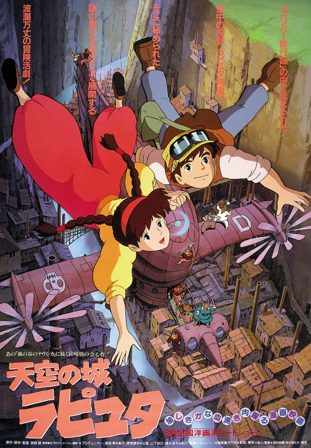

《天空之城》（天空の城ラピュタ）是日本吉卜力工作室制作的动画电影，宫崎骏担任原作、监督、脚本设计、角色设定及导演，田中真弓、横泽启子、初井言荣、寺田农等人配音。该片于1986年8月2日在日本上映。该片讲述的是主人公少女希达和少年巴鲁以及海盗、军队、穆斯卡等寻找天空之城拉普达（Laputa）的历险记。 其主题曲《伴随着你》（通称：天空之城）由音乐家久石让作曲，因以其让人落泪的优美曲调和动人心弦的美妙音律而闻名全球，被改编成多种版本，成为流传的影视名曲。
少女希达戴着一串有飞行魔力的项链从空中落下，遭到国防军 特务和海盗朵拉两组人的追击。见习机械工巴鲁救了希达把她收留在自己家里。希达在巴鲁的房中发现了一张天空之城的照片，巴鲁告诉希达自己死去的父亲曾经见到过传说中埋藏着宝藏的空中浮岛拉普塔，他的梦想就是找到这座天空之城。
朵拉和特务们追踪而来，要夺取希塔的项链。危机时刻，希达带着巴鲁再度悬浮于空中脱险。原来，希达所戴的项链就是让天空之城飞行的动力石，而希达正是拉普塔王国的公主。不久后，两人还是被国防军捕获。特务长慕斯卡以巴兹的生命为要挟，强迫希达说出天空之城的所在地。巨大的飞行战舰带着希塔前往拉普塔，而为了救出希塔，巴鲁和朵拉一起追赶而去……
